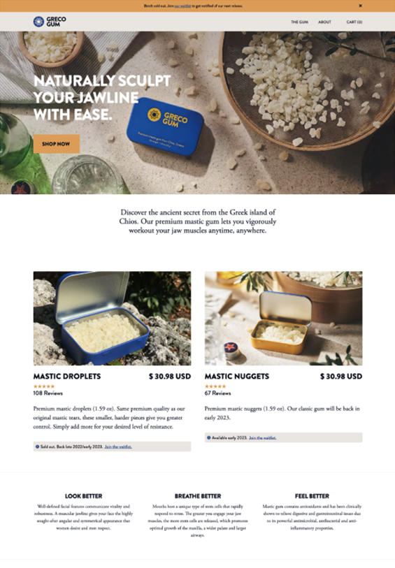
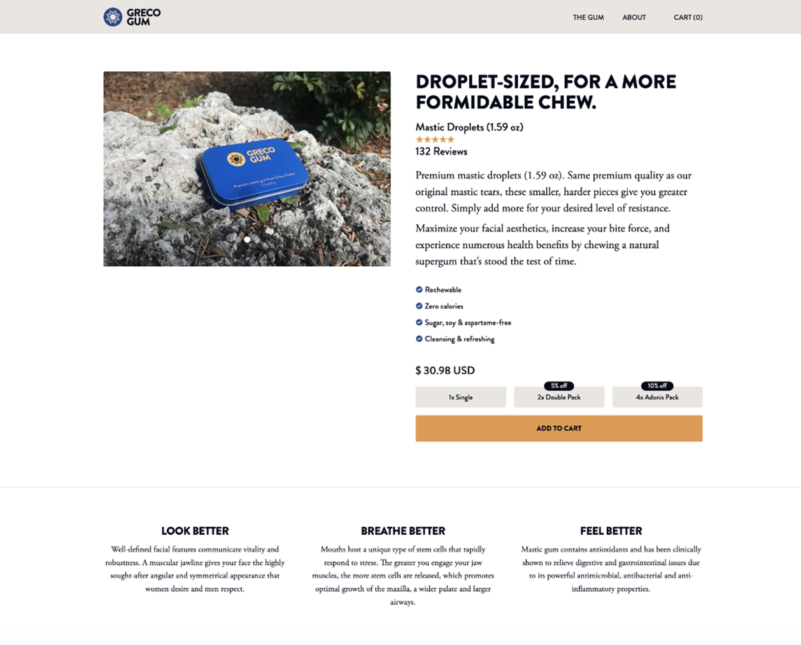
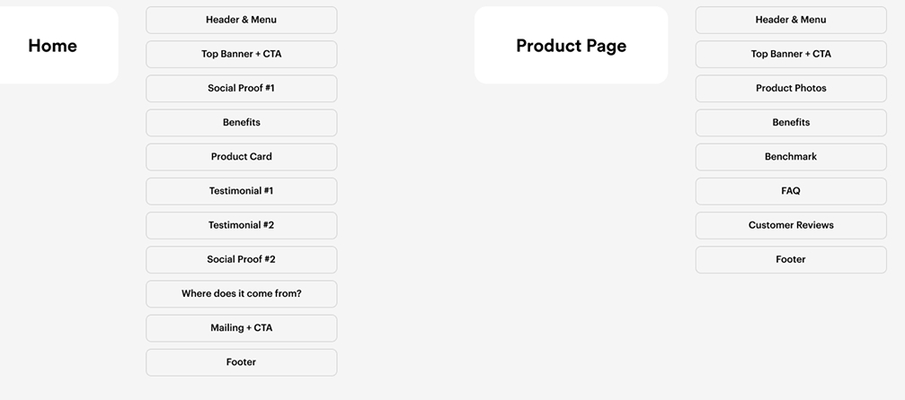
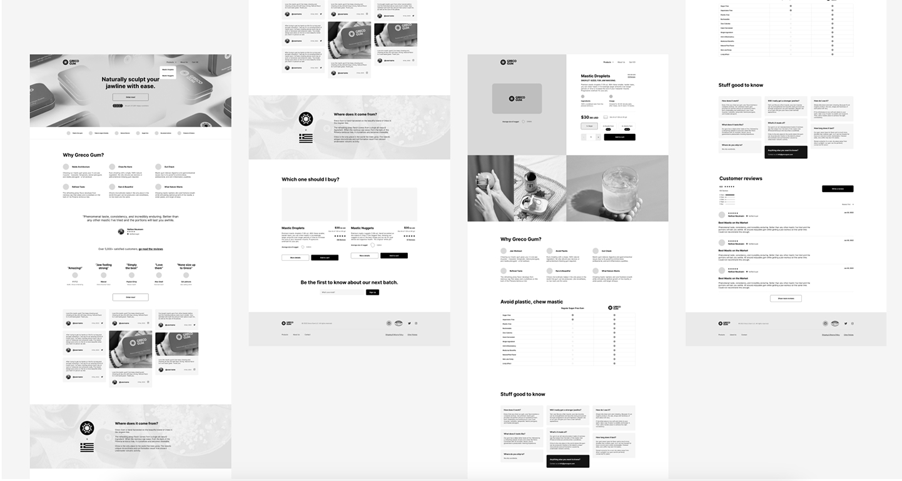
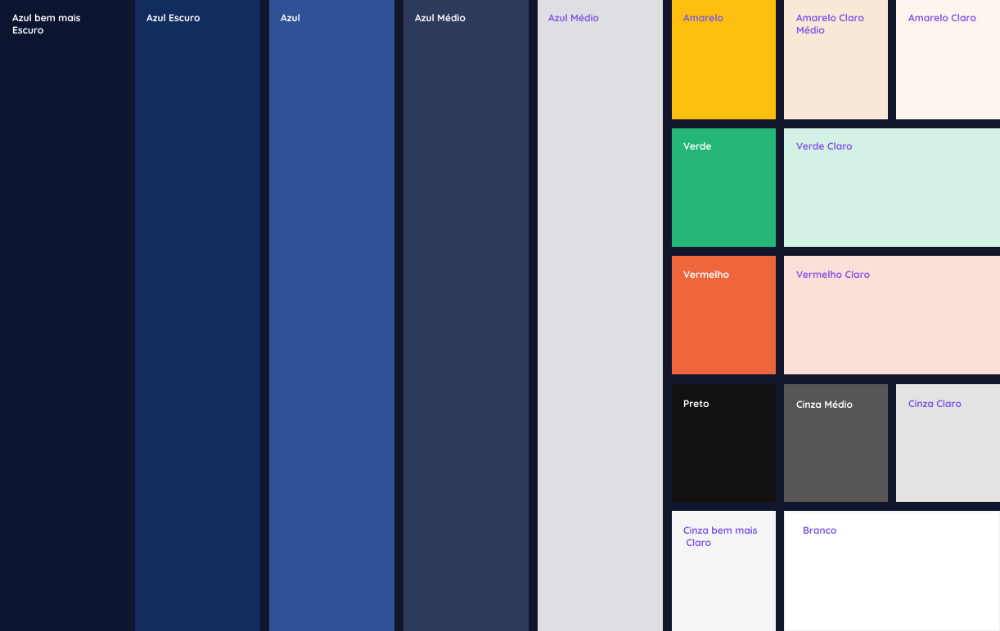
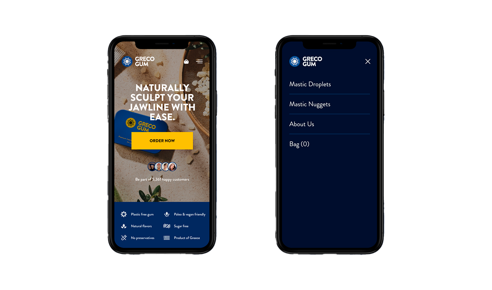

Home>Projetos>Caso
GRECO GUM
Modele naturalmente sua mandíbula com facilidade
Greco Gum vem diretamente da bela ilha de Chios, na Grécia. Este incrível chiclete oferece diversos benefícios, como auxiliar na digestão, ajudar fumantes a largarem o hábito e até mesmo esculpir uma mandíbula mais definida.
Decidi realizar um redesign do site, já que o site antigo tinha alguns problemas, como um visual desatualizado e que não refletia a qualidade incrível do produto, que as pessoas amam. Para novos clientes, o mastic gum poderia parecer meio estranho no começo — já que estão acostumados com chicletes comuns e não sabem o que esperar.
Stop motion por: Midnight Hour Creative
Texto do site por: Paul French
Compre agora: www.grecogum.com
Ano
2023
Scope of Work
User Interface
User Experience
Ecommerce
Icon Design
Duração
9 semanas
Vamos começar pelo básico
O site antigo tinha alguns problemas, como um visual desatualizado e que não refletia a qualidade incrível do produto, que as pessoas amam. Para novos clientes, o mastic gum poderia parecer meio estranho no começo — já que estão acostumados com chicletes comuns e não sabem o que esperar.
Foi criado um novo texto explicando de onde o produto vem, quais os benefícios e também uma comparação entre as duas versões disponíveis para novos clientes.
Problema
O site antigo parecia datado e sem personalidade.
Clientes novos não sabiam qual opção escolher.
Faltava conteúdo explicando os benefícios do chiclete.
Pouca prova social.
Solução
O novo site tem muito mais personalidade e um design novo e único.
A primeira página já mostra claramente a diferença entre as versões.
Novo conteúdo textual com benefícios e ícones foi adicionado.
Foram inseridos três blocos de avaliações e posts de redes sociais.
Site antigo e auditoria de UX
Neste projeto, o cliente tinha centenas de avaliações de clientes. Li mais de 150 delas para entender os pontos positivos e negativos, e resumi tudo em seis principais questões.
Antigo WebSite
Antigo Produto
Insights de consumidores
Categoria
Razão prática
As pessoas gostam do chiclete pela qualidade e preço justo.
Categoria
Benefícios à saúde
É muito usado por conta dos seus benefícios.
Categoria
Design da embalagem
O visual e o material fazem toda a diferença.
Categoria
Experiência positiva
Quem nunca havia experimentado ficou surpreso com o sabor e os resultados.
Categoria
Concorrência
A qualidade supera produtos encontrados na Amazon.
Categoria
Fisiculturistas amadores
Muitos usam para definir a mandíbula.
Tudo no lugar certo
Com base nas mais de 150 avaliações, montei uma estrutura sólida de conteúdo para cada página visando conversão. Após trocar ideias com a equipe da Greco, chegamos a um layout validado, pronto para wireframes.
Ecommerce SiteMap e Conteúdo dos Blocos
Hora dos Wireframes
Com a estrutura aprovada, criei os wireframes para organizar tudo visualmente antes da etapa de UI. O layout final teve alguns ajustes, mas fiquei bastante satisfeito com o resultado.
Logos, cores, fontes e ícones
Eles já tinham um logo ótimo, e eu levei isso adiante adicionando mais cores, estilos de fontes, botões e até ícones personalizados que eu mesmo desenhei. Como sempre crio meus próprios ícones, foi um prazer desenvolver esses com exclusividade.
Compras pelo celular
Também criei a versão mobile do site. Hoje em dia, com tantas pessoas comprando pelo celular, é essencial que a interface funcione bem em telas menores. Pensei em responsividade e navegação intuitiva para manter tudo agradável visualmente.
